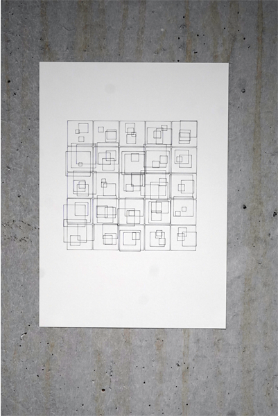
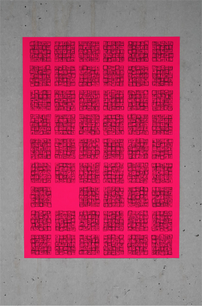
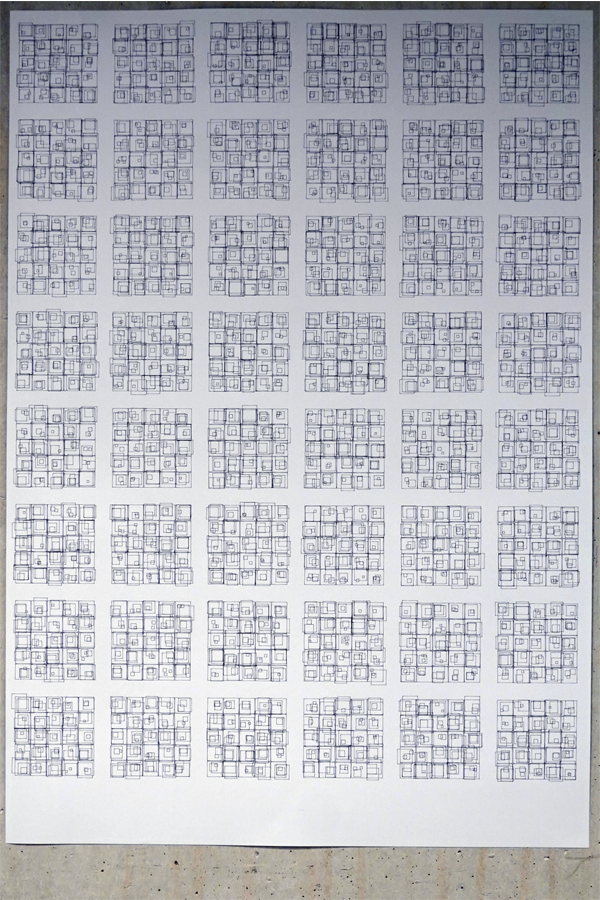
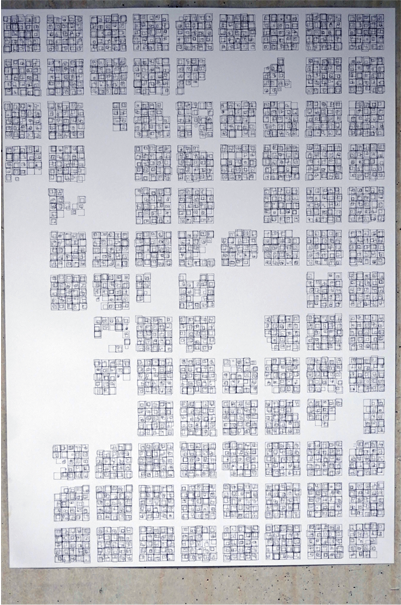
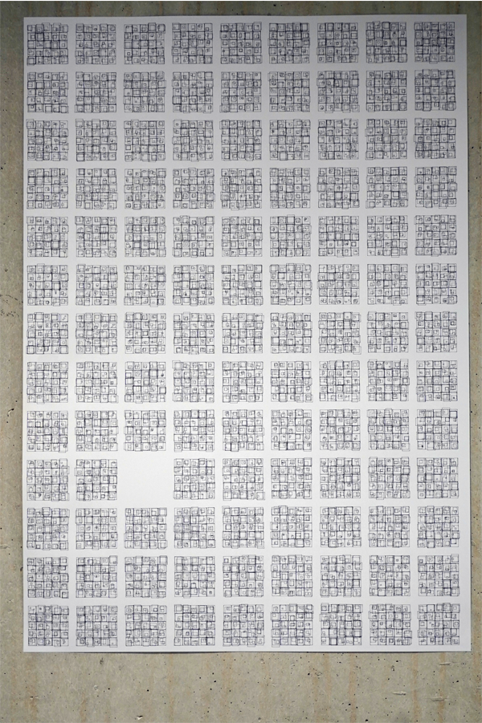
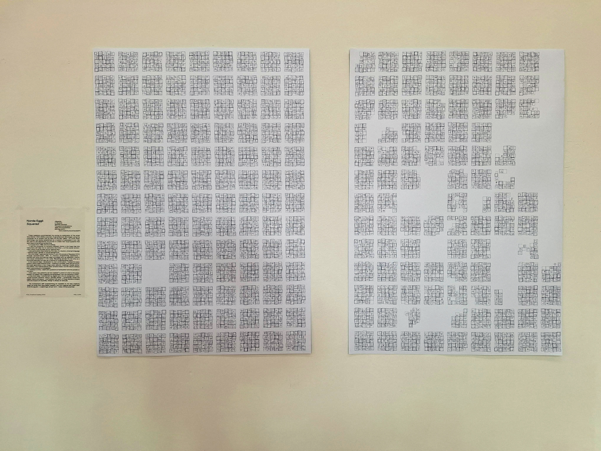
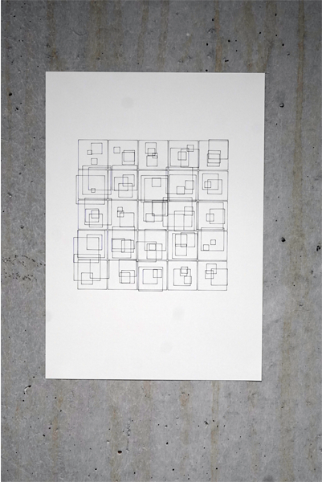
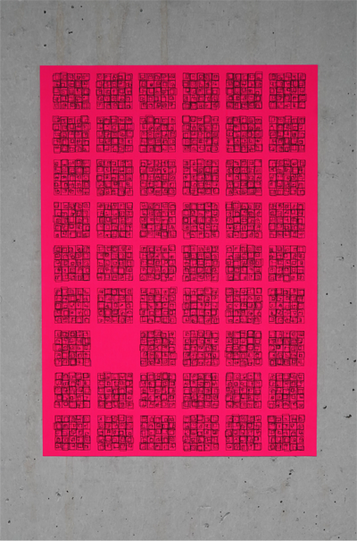
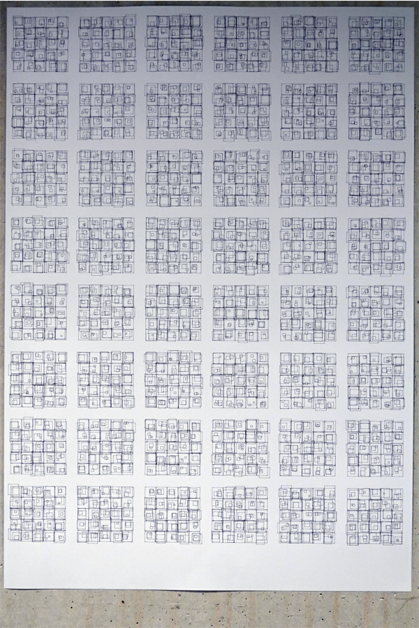
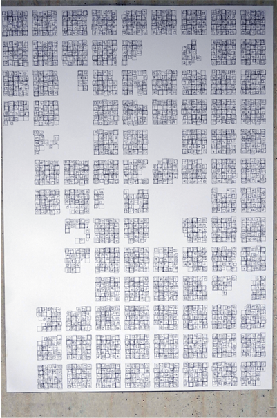
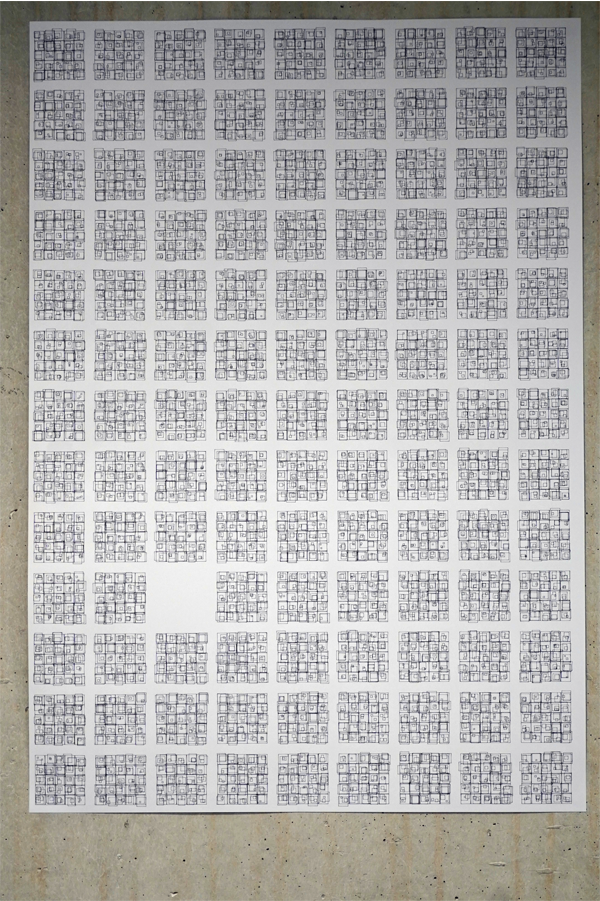
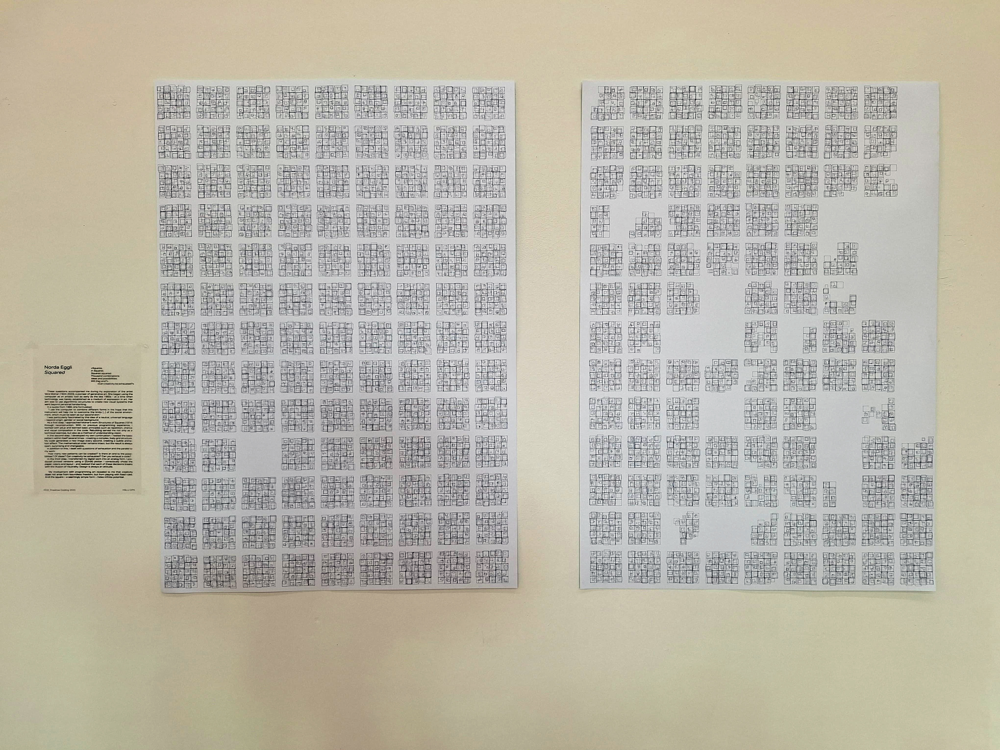
«Quadrate,
in Quadrate.
Quadrate im Quadrat.
Tausende Kombinationen,
Ideen und Möglichkeiten.
Gehen sie einmal aus?»
«Kann man Kreativität erschöpfen?»
Diese Fragen begleiteten mich während meiner Auseinandersetzung mit der Künstlerin Vera Molnar (1924–2023), einer Pionierin der generativen Kunst. Bereits ab den späten 1960er-Jahren nutzte sie den Computer als künstlerisches Werkzeug – in einer Zeit, in der Technologie noch kaum als Ausdrucksmedium in der Kunst etabliert war. Ihr Ziel war es, durch algorithmische Strukturen neue visuelle Systeme zu schaffen, die über persönliche Handschrift hinausgehen.
In einem Zitat von 1980 formulierte sie:
„Ich setze den Computer ein, um verschiedene Formen zu kombinieren, in der Hoffnung, dass dieses Instrument mir hilft, die Grenzen [...] des sozialen Umfelds, das als unsere zweite Haut angesehen werden muss, zu überwinden.“
Mich faszinierte besonders dieser Gedanke einer neutralen, universellen Sprache – jenseits von Herkunft, Geschlecht oder gesellschaftlicher Prägung.
Im ersten Schritt näherte ich mich Molnars Werk «Structures of Squares» (1974) durch Rekonstruktion an. Ohne Vorerfahrung im Programmieren arbeitete ich mit p5.js und erlernte grundlegende Prinzipien wie Wiederholung, Zufall und visuelle Komposition im Code. Das Nachbauen diente mir nicht nur als technische Übung, sondern auch als Methode des verstehenden Sehens.
Im zweiten Schritt entwickelte ich eine eigene Weiterführung: Ich verschachtelte das Grundmuster mehrfach in sich selbst – es entstand eine komplexe, lebendige Gitterstruktur. Mein Code generiert jede Sekunde ein neues Bild, wodurch ein subtiler Animations-Effekt entsteht. Die mathematische Ordnung bleibt erhalten, doch das Ergebnis ist stets offen, überraschend, wandelbar.
Parallel dazu beschäftigte ich mich mit Fragen zur Erschöpfung:
Wie viele neue Muster lassen sich erschaffen? Gibt es ein Ende der Möglichkeiten? Der Ideen? Kann man Kreativität tatsächlich erschöpfen?
Im dritten Schritt überführte ich mein digitales Werk in eine analoge Form. Mit einem (Zündt-) Plotter produzierte ich gedruckte Versionen. Dabei wählte ich Papier, Farben und Layout bewusst – und stellte fest: Jede dieser Entscheidungen bricht mit der Illusion der Neutralität. Gestaltung ist immer Haltung.
Die Auseinandersetzung mit generativer Kunst offenbarte mir: Kreativität entsteht nicht aus grenzenloser Freiheit, sondern gerade im Spiel mit festen Regeln. Und im Quadrat – einer scheinbar einfachen Form – liegt unendliches Potenzial verborgen.
Bilderverzeichnis
1. SVG-Datei, (Bitte darauf klicken um es genauer zu sehen).
2. Detailansicht Zeichnung.
3. Zündt-Plotter.
4. Arbeitsprozess.
5. Zwischenergebnisse Coding.
6. Zwischenergebnisse Coding.
7. Poster 5x5 (Format: A3).
8. Poster 7x10 mit Lücke (Format: A3).
9. Poster 6x8 auf grünem Papier (70x100cm).
10. Poster nach Original von Vera Molnar (Format: A3).
11. Poster 7x10 mit Lücke auf pinkem Papier (Format: A3).
12. Poster 6x8 (Format: 70x100cm).
13. Poster 9x13 beim Drucken gestoppt (Format: 70x100cm) - Selektion Ausstellung.
14. Poster 9x13 mit Lücke (Format: 70x100cm) - Selektion Ausstellung.
15. Ausstellung Colabor Festival 05.06.2025.